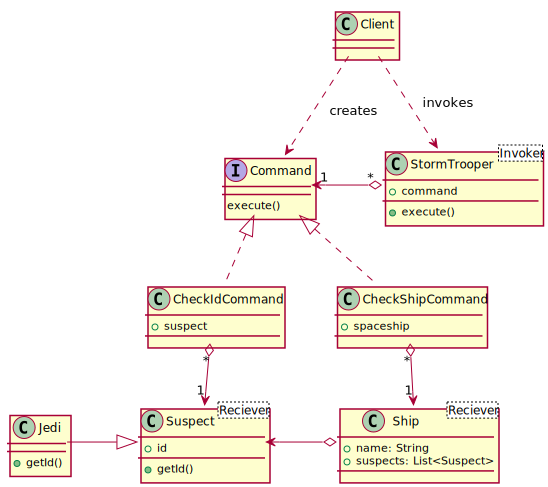

class: bottom # BOF5619 - Lean Beans (are made of this): Command pattern vs. MVC <img src="images/michbarsinai.jpg" width="60" align="left" style="border:5px solid transparent" /> Michael Bar-Sinai ([@michbarsinai](https://twitter.com/michbarsinai)) http://www.iq.harvard.edu/people/michael-bar-sinai http://mbarsinai.com <img src="images/philipdurbin.jpg" width="60" align="left" style="border:5px solid transparent" /> Philip Durbin ([@philipdurbin](https://twitter.com/philipdurbin)) http://www.iq.harvard.edu/people/philip-durbin http://greptilian.com .right[[](http://www.iq.harvard.edu)] ??? Hello! Thanks for coming. Let's get going. This is Birds of a Feather 5619, "Lean Beans (are made of this): Command pattern vs. MVC." We are Michael Bar-Sinai and Philip Durbin, developers at the *Institute* for *Quantitative* Social Science at *Harvard* University. That's *IQSS* on GitHub and Twitter. --- class: bigfont # Agenda 1. Intro, real world challenges 2. MVC, MVC in Java EE, classic command 3. Command pattern adaptations * Java EE * Modern programming * Permission system 4. The Lean Bean Design Pattern .regularfont[ Slides: https://github.com/IQSS/javaone2014-bof5619 Code: https://github.com/IQSS/dataverse ] ??? Here's the agenda for this talk. First off, we come from academia but we're here to talk about how we applied the command pattern to a real-world Java EE application called "Dataverse". This is a research *tool*, not just research. We're going to define our terms: - Model View Controller or MVC - MVC in Java EE - the classic command pattern Then, we'll present the adjustments we've made to the command pattern to adapt it to Java EE, modern programming, and a *permission system* we came up with for Dataverse. Finally, we'll generalize the lessons learned and explain why we refer to the pattern as the *Lean Bean* Design Pattern. This entire talk has already been posted to GitHub. You can find it under github.com/IQSS and you should feel free to open issues. --- # Two real world challenges .medfont[ Dataverse 4.0 requirements 1. Maximal code re-use between API and GUI 2. Host sensitive data with granular permissions .center[ ] https://github.com/IQSS/dataverse ] ??? Let's talk for a moment about two challenges we've tackled in Dataverse, our Java EE 7 application. First, we're trying to maximize the amount of code re-use between the web interface and the RESTful API. We want the same code path to be traveled no matter how you interact with the application. Ideally, everything you can do in the GUI is also possible via the API (and vice versa). Second, we have a focus on *security*. Our users are interested in hosting *sensitive datasets* in our application, so we need *tight* security and *granular permissions*. In the end, we chose the command pattern (with some adjustments) to address both of these challenges (code re-use and security), but before we dive into the command pattern, let's first talk about MVC. --- # Classic MVC Goal: <strong>Separate data from its representation</strong> .center[ <img src="uml/mvc.svg" width="350"/> ] - Model: Business objects - View: What the users sees - Controller: Manipulates the model according to inputs from the view Developed by Trygve Reenskaug at Xerox PARC in 1979. Not a GoF pattern. <!-- <img src="images/gof.png" width="300"/> --> ??? In classic Model View Controller or "MVC": * the model consists of business objects, * the view is what the user sees * and the controller manipulates the model. MVC separates the user interactions from the data and it facilitates code reuse. This pattern was developed by Trygve Reenskaug ("Treegvee Rainska"), while visiting Xerox PARC in 1979 and working on graphical user interfaces in SmallTalk. It's interesting to note that MVC is *not* one of the Gang of Four patterns, though it is mentioned in that book, which we'll get to in a bit. The main benefit here is that the model can be viewed in many ways. There's a nice separation of concerns. Here we see a button on the view. When users click it, the controller manipulates the model. --- # The Command Pattern .slide-badge[ <img src="images/gof.png" width="100"> ] Goal: <strong>Capture operations on the model as data</strong> .center[ <img src="uml/mvcc.svg" width="450"/> ] A request is a first-class object. ??? The command pattern, presented in the classic Gang of Four book, captures modifications to the model objects as data. A request is a first-class object. When a button is clicked, we see a *command* being *instantiated* and *executed*. There's an extra step, and extra layer of abstraction. Now there's a command in here, between the controller and the model. --- class: medfont # Official GoF definition <img src="images/gof.png" width="300" align="right"/> **Command Pattern**: Encapsulate a request as an object, thereby letting you parameterize other objects with different requests, queue or log requests, and support undoable operations. Objects in play: - Client - Command - Receiver - Invoker ??? Here's the official definition of the command pattern from "Design Patterns", the Gang of Four book. "Encapsulate a request as an object, thereby letting you parameterize other objects with different requests, queue or log requests, and support undoable operations." There are four objects in play: - the "client" - the "command" - the "receiver" and - the "invoker" --- class: bigfont # Waitresses and Cooks - Customer - Order - Waitress - Cook ??? The Gang of Four book gives examples in C++. You click a button to trigger an OpenFileCommand. A more *Java* oriented book is Head First Design Patterns, which does cover the command pattern. In *that* book, the client is a customer at a diner, who makes an order, which is the command, that goes to the waitress, who is the "invoker", who gives it to the cook, who is the "receiver". The book also has you program a remote control with the command pattern. It's very well done. It's an excellent book. --- # You Are In Command Now (Admiral Piett) <img src="images/in-command-now.jpg" width="700"/> ??? But you know, I don't wanna talk about cooks and waitresses and remote controls so I'm going to give you some examples from Star Wars. You see, Darth Vader has a whole empire to command. He's forever giving these guys commands. --- class: bigfont # Giving Commands <img src="images/look-sir-droids.jpg" width="600"/> 1. stop people with droids 1. check identification ??? So... let's give some commands. Here's an easy one. You tell your guys... - look around for *droids* and - for the *people* that are *with* the droids... check their *identification* How hard could this be? --- # The Command interface .center[ <img src="images/not-the-droids.png" width="600"/> ] ```java public interface Command { void execute(); } ``` ??? Let's first look at a Command object. Notice that it's an *interface*. Individual commands (concrete commands) will implement this interface. Now, the command interface is very simple. It only requires that you implement a single method, which is often called "execute". That's some of the power of the dark s... er, power of the command pattern... that no matter what the command is called, the *complexity* is hidden behind a consistently named method such as "execute". (Technically, you don't have to use the `interface` keyword; It can be any class. You could call it the command supertype.) --- layout: true .slide-badge[ <img src="images/not-the-droids.png" width="200"/> ] --- # Complete CheckIdCommand ```java public class CheckIdCommand implements Command { private Suspect suspect; // receiver public CheckIdCommand(Suspect suspect) { this.suspect = suspect; } public void execute() { try { System.out.println("Id for " + suspect.getName() + " is " + suspect.getId()); } catch (Exception ex) { System.out.println("Move along, move along."); } } } ``` ??? Here's an example of a `CheckIdCommand`. We want suspects (people with droids) to give us their identification. Notice that a suspect gets passed into the constructor of the command. This is the "receiver" of the CheckIdCommand. In this case the suspect is Obiwan Kenobe so there's the danger of a JediMindTrick exception being thrown... Perhaps unwisely, if *any* exception is thrown, the stormtrooper simply says, "Move along, move along." That's all contained in the execute() method, which again is required by the command interface. All commands implement an execute() method. --- # The Client ```java System.out.println("# Mos Eisley checkpoint"); Suspect obiwan = new Jedi("Obiwan"); // receiver Command checkIdCommand = new CheckIdCommand(obiwan); StormTrooper stormTrooper = /* Recruit trooper here */ stormTrooper.setCommand( checkIdCommand ); // invoker *stormTrooper.execute(); // Move along, move along. ``` - ties all the object together - command bound to receiver - invoker is given a command to execute, and told to execute it ??? In the command pattern the *client* is the piece ties everything together. We'll see all of the components in play. Before we instantiate our CheckIdCommand, we need to decide which Suspect we're going to bind it to. Whose id are we going to check? A Jawa? A Tuskan Raider? No... we've got Obiwan here, so he's what gets passed in when we create the command. Again, Obiwan is the "receiver" of the command. And who's going to execute the CheckIdCommand? The stormtrooper. The "invoker". Of course, when we call `execute` on the stormtrooper, all we hear is "move along, move along." --- # One Invoker, Two Commands ```java StormTrooper stormTrooper = /* TX-421 */ System.out.println("# Mos Eisley checkpoint"); Suspect obiwan = new Jedi("Obiwan"); // receiver *Command checkIdCommand = new CheckIdCommand(obiwan); stormTrooper.setCommand(checkIdCommand); stormTrooper.execute(); // Move along, move along. System.out.println("# Death Star hangar"); Ship falcon = new Ship("Millenium Falcon"); // receiver *Command checkShipCommand = new CheckShipCommand(falcon); stormTrooper.setCommand(checkShipCommand); // same invoker, new command stormTrooper.execute(); // No one on board. ``` Same stormtrooper given different commands. ??? The nice thing about commands is that they all behave the same way from the perspective of the invoker, the stormtrooper in this case. We can take the same stormtrooper (TX 421) and load him up with different commands at different times. We already saw how he was checking IDs at Mos Eisley. Now the same stormtrooper at the Death Star in the Millenium Falcon executing the `CheckShipCommand`. We ran the "setCommand" method on him before calling "execute" again. He says no one is on board. --- # Stormtrooper/Invoker ```java public class StormTrooper { private Command command; public StormTrooper(Command command) { this.command = command; } public void setCommand(Command command) { this.command = command; } public void execute() { command.execute(); } } ``` Stateful: setCommand, another call to execute. ??? Here we see the StormTrooper class, the invoker. This adheres to the classic 1994 Gang of Four implementation - note the *statefulness*, where you first set a Command field and then use another call to request the invoker to execute the command. --- # Suspect/Receiver ```java public class Suspect { // fields, constructors, getters public String getId() { return id; } } ``` Jedi were always in a class of their own. ```java public class Jedi extends Suspect { @Override public String getId() { throw new RuntimeException("Jedi mind trick!"); } } ``` ??? Here's the Suspect class, which is the receiver in our CheckIdCommand. For most suspects, you call "getId" and they give you their identification. Jedi subclass "Suspect" and throw runtime exceptions instead. --- # Another Command Example ```java public class CheckShipCommand implements Command { Ship ship; // receiver public CheckShipCommand(Ship ship) { this.ship = ship; } public void execute() { System.out.println( ship.getSuspects().isEmpty() ? "No one on board." : "Found " + ship.getSuspects().size() + " suspects in " + ship.getName()); } } ``` ??? For completeness, here's the CheckShipCommand I mentioned. It's very similar to the other command in that it implements the execute method. In this case the reciever of the command is a ship. It might be a piece of junk. We don't know. --- <h1>Star Wars Class Diagram</h1> .center[  ] ??? So, to review, the client creates a command that's bound to a receiver (a suspect such as Obiwan Kenobe). Then the client instantiates a stormtrooper and sets that stormtrooper's command to the one that was just created (the CheckIdCommand). Finally, we call the execute method on the stormtrooper to run the command he was given. --- layout: true --- class: middle center slide-emph-mid #But what's in it for us? .left[ .medfont[ * Why not call `execute()` on the command from the client code? * Why not put the functionality of `execute()` in a normal method instead of creating new objects? * _Yet another_ level of indirection? Don't we have enough of these? ] ] ??? At this point, you may ask, "what's in it for us?" * Why not call `execute()` on the command from the client code? * Why not put the functionality of `execute()` in a normal method instead of creating new objects? * _Yet another_ level of indirection? Don't we have enough of these? --- # Code as Data The command pattern allows us to treat a block of code (and its parameters) as data. Benefits: .medfont[ - Reuse methods from different controllers - Store commands in data structures - Queue commands - Create command macros, a sequence - Commands calling other commands - Test better - Log better, show command history - Easy to extend to support undo operations ] We can do all this (and more!) with commands. .right[But there's one very special thing we can also do with commands...] ??? The command pattern lets us take a block of code and its parameters, an use it as data. What are the benefits of this? We can *reuse* methods from different controllers. We can *queue* commands. We can create command macros, which are a sequence commands. These are commands calling other commands. We can *log* commands. It would be easy to start supporting *undo* operations. And there's another thing we can also do with commands... (Think of storing commands in a Map, where the key is an event id - for triggered command execution. What's another version of this? Right, lambda expressions. This is fundamentally different from the traditional procedural Code/Data dichotomy.) --- class: middle center slide-emph-max .bigfont[ Ignore Them. ] ??? We can ignore them. Why would we want to ignore commands? What if the user who issues a command doesn't have permission to execute it? Sure, you can hide a button in a GUI, but maybe they'll figure out the API call. What if the command doesn't make any sense? What if the user is trying to publish something that's already been published? --- # Why We Chose Command For Dataverse 4.0, a Java EE 7 app which needs to support sensitive data and a full API, we wanted: .medfont[ 1. Maximal code re-use between the API and the UI 2. By-design, permission-based security. ] .center[ ] With some extensions and infrastructure (shown later) - we got just that. ??? Why did we choose the command pattern for Dataverse? Let's see how it addresses those two challenges we mentioned. Again, we're developing a full API so that practically any action you can take in the GUI you can also execute with an API call. With the command infrastructure, the *same* command is passed to the front end or the API back end. It's a way of ensuring that functionality is not tied to one interface or the other. The other main reason has to do with permissions. Again, we are working toward supporting sensitive datasets so our implementation of the command pattern pays attention to permissions. --- # Back on schedule <blockquote class="example-obtuse"> <p style="font-size:1.4em;">You may dispense with the pleasantries, Commander. I'm here to put you back on schedule.</p> </blockquote> <img src="images/schedule.jpg" width="600"/> ??? Of course, Darth Vader doesn't care about any of this. He just wants you to build the Death Star! On schedule! --- # Back to Java EE .middle.center[ <img src="images/deathstar-gf.png" width="500"/> ] ??? Did you know Death Star runs on Java EE? It's true! Ok, they slipped some Python in there too... Let's talk about MVC and the command pattern in Java EE. --- # MVC in Java EE Balancing clean design and practicality. .center[ <img src="uml/mvc-ee.svg" width="500"> ] .btw[ Note: We show one interpretation here - there are other interpretations as well. ] ??? Ok, let's say this one interpretation of MVC in Java EE. It's not as clean as classic MVC, but handles persistence and handles the complexities of a GUI over a stateless protocol such as HTTP. We've drawn the lines between the boxes, other people would probably place them differently. We've got JSF hitting a backing bean, which uses a service bean, which manipulates entities in the database. (Also note that some annotations, such as the validation ones, go against this separation by adding user interface texts to the model objects (e.g `@NotBlank(message = "Please enter an identifier for your dataset.")`)) --- # MVC in Java EE Balancing clean design and practicality. .center[ <img src="uml/mvc-ee.svg" width="500"> ] .btw[ Note: We show one interpretation here - there are other interpretations as well. ] <div style="position: absolute; top:140px; left: 230px" class="speech speech-left">Now, how do I cram commands in here?</div> <div style="position: absolute; top:180px; left: 230px">/</div> ??? You might be wondering how you can cram commands in here. --- class: middle center .disturbancefont[ I feel a great disturbance in the source. ] ??? You *might* feel a great disturbance in the source. --- # Nothing New Under The Sun EJB Design Patterns: Advanced Patterns, Processes, and Idioms by Floyd Marinescu, 2002 <img src="images/ejb-design-patterns.jpg" width="300" align="right"/> "Use the Command pattern to wrap business logic in lightweight command beans that decouple the client from EJB, execute in one network call, and act as a façade for the EJB layer." (p. 19) Command vs. Session Façade + Business Delegate No invoker: "Applied to EJB, the Command Server class is a stateless session bean that accepts a command as a parameter and executes it locally." (p. 22) http://www.theserverside.com/news/1369776/Free-Book-EJB-Design-Patterns ??? So! Is our group the first to apply the command pattern to Java EE? Of course not. In 2002 (12 years ago!) Floyd Marinescu wrote a book called "EJB Design Patterns" that said, - "Use the Command pattern to wrap business logic in lightweight command beans that decouple the client from EJB, execute in one network call, and act as a facade for the EJB layer." He frames the Command pattern as an alternative to a combination of the Session Facade pattern and the Business Delegate pattern. He doesn't use the term "invoker". To him it's the "command server". He says, - "Applied to EJB, the Command Server class is a stateless session bean that accepts a command as a parameter and executes it locally." --- # Command, Adapted We have adapted the Command Pattern to support permissions and execute in a Java EE environment ```java public interface Command<R> { * public R execute( CommandContext ctxt ) throws CommandException; public Map<String,DvObject> getAffectedDvObjects(); public User getUser(); } ``` * Modern touches * `execute` is an expression (not a statement) * Generics * Command objects can be (and mostly are) immutable * The `CommandContext` parameter is used to allow the command access to server resources * No dependency injection needed → Test using standard JUnit! .bottom-remark[ Real code, comments removed. ] ??? In our application, we have adapted the command pattern to support permissions and execute in a Java EE environment. We like to think we've added some modern touches. Our version of "execute" is an expression, not a statement, and it makes use of generics. Command objects can be (and mostly are) immutable. The `CommandContext` parameter is used to give the command access to server resources, such as service beans. This means that no dependency injection is necessary within the commands themselves. You can write tests using standard JUnit. --- # Command, Adapted We have adapted the Command Pattern to support permissions and execute in a Java EE environment ```java public interface Command<R> { public R execute( CommandContext ctxt ) throws CommandException; * public Map<String,DvObject> getAffectedDvObjects(); * public User getUser(); } ``` * A command acts on one or more receivers of type `DvObject` * Think of these as "files" and "directories". * A command must be issued by a `User` .bottom-remark[ Real code, comments removed. ] ??? The next thing to notice about how we've limited the scope of the receivers - commands operate on Dataverse objects only. For now, you can think of Dataverse objects as files and folders. These are the "receivers" of commands, the equivalent of passing in Obiwan Kenobe or the Millennium Falcon from before. Also, in our system, when you instantiate a command, you always specify a "User" object. This is the person attempting to executing the command, which may or may not succeed based on permissions. --- # Command, Adapted We have adapted the Command Pattern to support permissions and execute in a Java EE environment ```java public interface Command<R> { * public R execute( CommandContext ctxt ) throws CommandException; public Map<String,DvObject> getAffectedDvObjects(); public User getUser(); } ``` `CommandException` has 3 sub-classes: * `IllegalCommandException` - Command makes no sense * e.g. move a parent to its descendant * `PermissionException` - Issuing user doesn't get to perform this operation over the affected receivers * `CommandExecutionException` - Oops, our bad .bottom-remark[ Real code, comments removed. ] ??? Notice that the "execute" method can throw a CommandException. We've defined three subtypes for command exceptions: First, an `IllegalCommandException` is thrown when the command makes no sense. Let's say you're trying to publish something that's already published. Let's say you're trying to move a folder to one of its own subfolders. The system won't let you do stuff like this. These are the kind of operations that are easy to write unit tests for. Second, a `PermissionException` is thrown when a user isn't allowed to perform the operation on the affected receivers, the dataverse objects in question. We'll explain the permission system further in a bit. Finally, a `CommandExecutionException` is a system error, an internal error within our application. The idea is to log these and notify a sysadmin that there's something to fix. --- # Command Invoker, Adapted We called the invoker *Engine*, as the term is more familiar. ```java public interface DataverseEngine { public <R> R submit( Command<R> aCommand ) throws CommandException; } ``` * Modernized invoker - replaced the `set`→`execute`→`get` sequence with a single method call. * `submit` is a generic method, allowing type-safe execution of any command. .bottom-remark[ Real code, comments removed. ] ??? We decided to call the invoker an "engine" since there's a lot going on under the hood. We hide the complexity of the engine from developers who are asked to write commands. In the classic command pattern, we saw how the client runs "execute" on the invoker after loading up a command. We say that you "submit" a command to our engine. The command may or may not succeed, based on the user you passed in and the objects you're trying to manipulate. You let the engine do a lot of error checking. You catch CommandExceptions and report back to the user what the result was. `submit` is a generic method, allowing type-safe execution of any command. If you try to assign the return value of a command to the wrong type you'll get an "incompatible types" error at compile time. The CreateDatasetCommand returns a dataset. The engine prevents you from assigning the result to a DataFile, for example. --- # Command Engine in the Wild Creating a Dataset from the API (JAX-RS `@Path` bean). ```java @EJB protected EjbDataverseEngine engineSvc; ... Dataset ds = ... // get dataset here Users u = ... // get the user here try { Dataset managedDs = * engineSvc.submit( new CreateDatasetCommand(ds, u) ); return okResponse( "created dataset " + managedDs ); } catch ( XXXCommandException ex) { //... } ``` .bottom-remark[ Code adapted for slide. Original file at: https://github.com/IQSS/dataverse/blob/master/src/main/java/edu/harvard/iq/dataverse/api/Dataverses.java#L123 ] ??? Here we see the command engine in the wild. We're going to see how we submit the same CreateDatasetCommand to it from the JSF web interface and from the RESTful API based on JAX-RS. We'll look at the API call first. We're getting back a persisted dataset from the engine when we submit the CreateDatasetCommand to it. We send back a JAX-RS response if the dataset was created or not. You can look into the CreateDatasetCommand to see all the stuff it's doing... assigning permissions, sending notifications, triggering other business logic. But if you're working on the API endpoint, all you care about is sending the right command to the engine. --- # Command Engine in the Wild #2 Same command used from a JSF backing bean. ```java @EJB EjbDataverseEngine commandEngine; ... Command<Dataset> cmd; try { if (editMode == EditMode.CREATE) { * cmd = new CreateDatasetCommand(dataset, session.getUser()); } else { cmd = new UpdateDatasetCommand(dataset, session.getUser()); } dataset = commandEngine.submit(cmd); ... } catch ( CommandException ex) { ... } return "/dataset.xhtml?id=" + dataset.getId() + ... + "&faces-redirect=true"; ``` .bottom-remark[ Code adapted for slide. ] ??? Here's the front end, JSF. We're still submitting the same CreateDatasetCommand to the engine if we're in "create" mode. If we're in "edit" mode we send the UpdateDatasetCommand. In both cases we get back a dataset but we're first deciding which command to send. This is the "code as data" aspect of the command pattern at work. The command is simply stored as a variable, but you can imagine the command being put in a queue. Again, a command is a first class object you can pass around. --- # Command Engine in a Wild Loop Listing the content of a dataverse object (think `ls`). ```java try { for ( DvObject o : * engineSvc.submit(new ListDataverseContentCommand(u, dataverse)) ) { // add o to the output } } catch (IllegalCommandException ex) { return errorResponse( Response.Status.FORBIDDEN, ... ); } catch (PermissionException ex) { return errorResponse(Response.Status.UNAUTHORIZED, ... ); } catch (CommandException ex) { logger.log(Level.SEVERE, "Error while " + messageSeed, ex); return errorResponse(Status.INTERNAL_SERVER_ERROR, ... ); } ``` .bottom-remark[ Code adapted for slide. Actual code has some extra neat stuff outside the scope of this BOF. See https://github.com/IQSS/dataverse/blob/master/src/main/java/edu/harvard/iq/dataverse/api/AbstractApiBean.java#L123 ] ??? We mentioned that our version of "execute" is an expression rather than a statement. What does this mean in practice? Since expressions can go almost anywhere (as opposed to statements), we can do this nice enhanced for-loop, where we create, submit and execute the command in the loop's head. There's a lot of flexibility in how we make use of the engine. --- # Command Sequence Diagram .center[ <img src="uml/mvcc-ee.svg" width="600"> ] ??? We were wondering how to cram commands into our sequence diagram. Here's how. We've still got JSF talking to a backing bean. But now the backing bean submits commands to the engine and the commands manipulate the model. --- # Command Sequence Diagram .center[ <img src="uml/mvcc-ee.svg" width="600"> ] <div style="position: absolute; top:100px; left: 180px" class="speech speech-left">Hey, where did the service beans go?</div> <div style="position: absolute; top:140px; left: 180px">/</div> ??? Of course, now you might be asking yourself, "Where did the service beans go?" --- # Command Sequence Diagram .center[ <img src="uml/mvcc-ee.svg" width="600"> ] <div style="position: absolute; top:100px; left: 180px" class="speech speech-left">Hey, where did the service beans go?</div> <div style="position: absolute; top:140px; left: 180px">/</div> <div style="position: absolute; top:380px; right: 80px;"> </div> <div style="position: absolute; top:350px; right: 160px" class="speech speech-right">Service beans will be with you, always.</div> ??? Obiwan says, "Service beans will be with you... always." Will they? What does *that* mean? Was Uncle Owen right? Is that wizard just a crazy old man? --- # Sample Command: Rename a Dataverse .smaller[```java @RequiredPermissions( Permission.UndoableEdit ) public class RenameDataverseCommand extends AbstractCommand<Dataverse>{ private final String newName; private final Dataverse renamed; public RenameDataverseCommand( User aUser, Dataverse aDataverse, String aNewName ) { super( aUser, aDataverse ); newName = aNewName; renamed = aDataverse; } @Override public Dataverse execute(CommandContext ctxt) throws CommandException { if ( newName.trim().isEmpty() ) { throw new IllegalCommandException("Dataverse name cannot be empty", this); } renamed.setName(newName); return ctxt.dataverses().save(renamed); } } ```] .bottom-remark[ Actual code] ??? So where are the service beans? Let's look at the RenameDataverseCommand. Once we get past a validation check (which is an example of an IllegalCommandException) we see "context dot dataverses dot save". That "save" is a method on the DataverseServiceBean and we get to it through what we're calling the CommandContext. So the service beans are still with us. But they're in charge of relatively simple operations like "save". The next thing to notice about the way we've implemented commands is that we annotate them with required permissions. This command requires the UndoableEdit permission. A PermissionException is thrown if user lacks sufficient permission --- # Permissions and Commands * In code, permissions live in an enum. Each permission: * Holds a basic descriptive text. * States which objects it applies to. * In the database, permission live in a bit field * Very fast, but must be kept under 64. * No DB joins needed * Testing if a permission exists in a permission set is a bitwise operation. .smaller[```java public enum Permission { Discover("See and search content", DvObject.class), Download("Download the file", DataFile.class), AccessUnpublishedContent("Access unpublished content", DvObject.class), AccessRestrictedMetadata("Access metadata marked as\"restricted\"", DvObject.class), UndoableEdit("Edits that do not cause data loss", DvObject.class), DestructiveEdit("Edits that cannot be reversed, such as deleting data", DvObject.class), // ... ```] ??? Let's look a little deeper at permissions. We put all of our permissions in an enum. That enum contains a description of what the permission means and it specifies which objects the permission can be applied to. How do we store permissions in the database? For performance, we store permissions in a bit field backed by a long. This is kind of like how Unix permissions work, how you chmod a file to 755 or 644. Because permissions are in an enum, each permission has a unique index number we use to map it to a bit in the field. It means we don't need expensive database joins when we're checking permissions. Testing if a permission exists is a bitwise operation. --- # Supporting Multiple Receivers When commands involve more than a single receiver, the `RequiredPermissionMap` annotation can be used. ```java @RequiredPermissionsMap({ @RequiredPermissions( dataverseName = "moved", value = {Permission.UndoableEdit, Permission.GrantPermissions} ), @RequiredPermissions( dataverseName = "source", value = Permission.UndoableEdit ), @RequiredPermissions( dataverseName = "destination", value = Permission.DestructiveEdit ) }) public class MoveDataverseCommand extends AbstractVoidCommand { // ... public MoveDataverseCommand( User aUser, Dataverse moved, Dataverse destination ) { super(aUser, dv("moved", moved), dv("source",moved.getOwner()), dv("destination",destination) ); this.moved = moved; this.destination = destination; } ``` ??? We've shown how we annotate our commands with the required permission but what if the command operates on more than one object at a time? What if we want to specify that different permissions are required on different objects that are being manipulated by the command? No problem. We use a RequiredPermissionMap to specify that you need the "DestructiveEdit" permission on this object and different permission on a different object. --- # Command Composition A dataset has a published version, accessible by everyone, and a draft version, accessible by the team only. We composed existing commands to get the latest version accessible to the `User` issuing the `Command`: .smaller[```java @RequiredPermissions( Permission.Discover ) public class GetLatestAccessibleDatasetVersionCommand extends AbstractCommand<DatasetVersion> // ... @Override public DatasetVersion execute(CommandContext ctxt) throws CommandException { DatasetVersion d = null; try { d = ctxt.engine() * .submit(new GetDraftDatasetVersionCommand(u, ds)); } catch(PermissionException ex) {} if ( d == null ) { d = ctxt.engine() * .submit(new GetLatestPublishedDatasetVersionCommand(u,ds)); } return d; } ```] ??? What about composing commands? Calling commands from other commands. This is supported too, and here's an example. The parent command first submits the GetDRAFTdatasetCommand to the engine. Note the empty catch clause for a `PermissionException`. If the issuing does not have a permission to view the draft, we try to get the published one. The null check is there in case there isn't a draft version. But, you know academia, there *always* is a draft version. We get some nice code re-use here, calling commands from commands. --- # Easy Testing Since the command and the context are POJOs, we can mock them easily. .smaller[```java //... @Before public void setUp() { testEngine = new TestDataverseEngine( new TestCommandContext(){...}); //... @Test public void testValidMove() throws Exception { testEngine.submit( new MoveDataverseCommand(null, childB, childA)); assertEquals( childA, childB.getOwner() ); assertEquals( Arrays.asList(root, childA), childB.getOwners() ); } @Test( expected=IllegalCommandException.class ) public void testInvalidMove() throws Exception { testEngine.submit( new MoveDataverseCommand(null, childA, grandchildAA)); fail(); } ```] ??? Here I'd like to mention the testability of the code. We can mock the command context and check to make sure IllegalCommand exceptions are thrown. For example, if you issue a command trying to move a folder to its child... that's simply not allowed. You can't have /usr/local/bin and move "usr" under "local". The TestCommandContext class returns `null` for all the beans except for those relevant to the test. For these beans, it returns a minimal implementation where only relevant methods work. --- class: slide-emph-mid middle Given that: * Service beans act on model objects, * Commands act on model objects, and * Commands work well for us, # Can we remove all service beans? ??? So, service beans act on model objects. Commands act on model objects. Was Obiwan right? Will service beans be with us, always? Can we remove the service beans? --- ## Can we remove all service beans? # Yes * Command context can give direct access to the entity manager, JMS resources and the like, so commands could use them directly. * There's just one problem... ??? The answer is yes, unless you consider the engine to be a service bean. We consider the engine part of our command pattern adaptation. At any event, we need to allow the container to inject dependencies somewhere, and that somewhere must be a managed bean. We later reference these injected dependencies from the `CommandContext`. From the CommandContext we can directly access the EntityManager and JMS resources... But there's one problem... --- ## Can we remove all service beans? # Yes * Command context can give direct access to the entity manager, JMS resources and the like, so commands could use them directly. * There's just one problem... .center.problem[ It's the Wrong Question ] ??? It's the wrong question. --- class: slide-emph-mid middle Given that: * Service beans act on model objects, * Commands act on model objects, and * Commands work well for us, # .deleted[Can] Should we remove all service beans? ??? Not *can* but *should* we remove all the service beans? That's really the question. --- # Should We Remove All Service Beans? ## Probably Not We tried that. Didn't work well, since the commands became too detailed. ## Current Status - a more balanced approach **Commands** deal with: Operations on model objects. **Service Beans** deal with: save, update, delete and various lookups of model objects (e.g. findById). ??? Probably not. We tried it and commands became too detailed. We're still iterating on this. Right now we're thinking... - Commands should deal with operations on model objects - Service beans should deal with basic CRUD operations: create, read, update, delete. --- # Should We Remove All Service Beans? ## Probably Not We tried that. Didn't work well, since the commands became too detailed. ## Current Status - a more balanced approach **Commands** deal with: Operations on model objects. **Service Beans** deal with: save, update, delete and various lookups of model objects (e.g. findById). .right[Hence, we call this:] ??? We're still trying to discover the pattern. For now we're calling it... --- class: slide-emph-happy center middle leanbeanfont ## _the_ # Lean Bean Design Pattern ??? ... the Lean Bean Design Pattern! --- # Lean Beans (are made of this) * Actions on models done by Command objects * CRUD done by lean beans ## Benefits * Code as data * Reuse commands from various places * Permission validation baked into the system * Commands are POJOs: * Reusable outside of Java EE * Testable using JUnit * Since we use beans, which are easier to mock than EntityManagers * Easy to find functionality - look at the class' name ??? Again, * Actions on models are done by Command objects * CRUD is done by lean beans The benefits include: * Treating code as data * Reusing commands from various places * Having permission validation is baked into the system Commands are POJOs (Plain Old Java Objects) which means they are: * Reusable outside of Java EE * Testable using JUnit Finally, it's easy to find functionality. Just look at the class names of commands. --- # Lean Beans (are made of this) * Actions on models done by Command objects * CRUD done by lean beans ## Downside * Some infrastructure needed * Engine * Permission annotations * Requires some learning - not a mainstream solution .btw[Also, we're just starting this - so not a lot of experience yet.] ??? These are the downsides we've notice so far. First, you need to write some infrastructure code. We wrote the command engine. We put in the checks for annotations on permissions. In addition, from what we can tell, using the command pattern in Java EE is not especially mainstream. You may need to explain it to your developers. --- # Future Work Some issues we already found out, and will deal with soon: ### As Annotations are static, required permissions can't be dynamic This conflicts with, e.g. The Decorator pattern. We will use a static-dynamic combo, where the basic command implementation uses reflection to return the required permissions, but subclasses can override this behavior. ### Permission pre-flight check Current implementation requires an actual object to work on, but the database layer allows for permission checks using the entity's id only - no real need to retrieve the object. When it makes sense, we need to take advantage of this. Somehow. ??? Let's talk about future work. Where are we going with the Lean Bean pattern? First, we're not sure we like using static annotations for required permissions. We're considering a static-dynamic combination where the basic command implementation uses reflection to return the required permission. But then we'd allow subclasses to override this behavior. Second, we'd like to get away from always requiring an instantiated object to check permissions. Consider the case of `GetDatasetCommand`. This command requires a `Dataset` object, which is retrieved from the database with all the overhead this may mean. After the retrieval, the engine might conclude that the user does not have a permission to view this dataset, and disposes of that object. So all the hard work done by JPA to construct this object is lost, and the garbage collector has more work to do. For these cases, we'd like to be able to use just the object id, not the object itself. --- class:sw3d-slide .sw3d[ # Questions? .sw3d-titles[ .sw3d-titlecontent[ Visit the IQSS data science team at http://datascience.iq.harvard.edu Dataverse project @ GitHub: https://github.com/IQSS/dataverse Slides and sample code from this talk: http://iqss.github.io/javaone2014-bof5619 .center[[](http://www.iq.harvard.edu)] Presentation created using remark.js. UML drawings done with PlantUML. Star wars scroller using CSS3: Based on Craig Buckler's implementation (for sitepoint.com) http://www.sitepoint.com/css3-starwars-scrolling-text/ Enjoy other IQSS BOFs at this JavaOne: BOF5475 When The PrimeFaces Bootstrap Theme Isn’t Enough Tuesday, Sep 30, 9:00 PM - 9:45 PM - Hilton - Plaza A CON5575 Bean Validation: Practical Examples from a Real World Java EE7 Application Tuesday, Sep 30, 4:00 PM - 5:00 PM - Parc 55 - Cyril Magnin I .center[] ] ] ] --- class: slide-emph-happy middle center #Thanks Visit the IQSS data science team at http://datascience.iq.harvard.edu Dataverse project @ GitHub: https://github.com/IQSS/dataverse Slides and sample code from this talk: http://iqss.github.io/javaone2014-bof5619 Next up from IQSS:<br /> Mike Heppler on JSF, PrimeFaces and Boostrap - Right here at Plaza A [](http://www.iq.harvard.edu) .bottom-remark[ Presentation created using remark.js. UML drawings done with PlantUML. Star wars scroller using CSS3: Based on Craig Buckler's implementation (for sitepoint.com) http://www.sitepoint.com/css3-starwars-scrolling-text/ ]